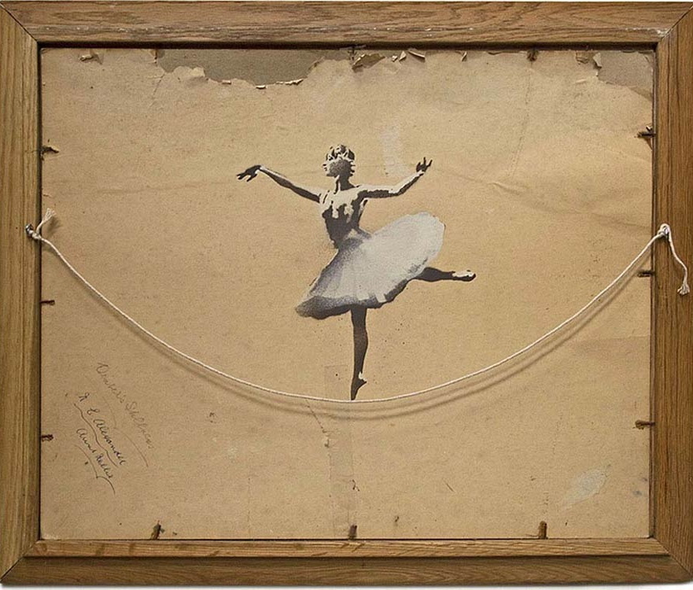
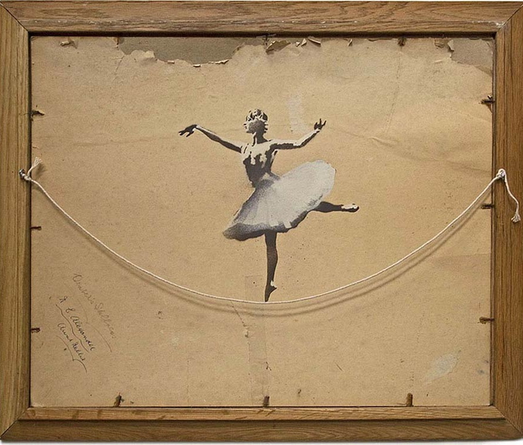

Считается, что Бэнкси родился в 1974 году в английском городе Бристоле. По одной версии, его
настоящее имя — Роберт
или Робин Бэнкс; по другой версии — Робин Ганнингем (англ. Robin Gunningham), о чём в марте 2016
года объявили СМИ со
ссылкой на учёных Лондонского университета королевы Марии. Также рассматриваются версии, что под
псевдонимом
Бэнкси выступает Роберт Дель Ная, британский музыкант (группа Massive Attack), певец и
граффитист (со ссылкой на
оговорку диджея Goldie в одном из интервью) или же Джейми Хьюлетт, британский художник комиксов
и основатель группы
«Gorillaz». Высказывалось предположение, что швейцарский художник Мэтр де Кассон (Maître de
Casson) может быть
Бэнкси, что отрицается самим Мэтр де Кассоном.
В конце 1990-х годов Бэнкси стал заниматься граффити и довольно долгое время действовал как
обычный райтер, но со
временем его рисунки становились всё масштабнее, а уходить от полиции ему становилось всё
сложнее. Однажды, прячась от
английских полицейских, Бэнкси решил начать пользоваться трафаретами, чтобы экономить время.
Осенью 2006 года в
нескольких лондонских магазинах незаметно заменил диски с альбомом певицы Пэрис Хилтон на диски
с сорокаминутной песней
своего друга Danger Mouse и собственными рисунками. Благодаря таланту художника и
остросоциальной тематике своих рисунков Бэнкси быстро обрёл популярность сначала в Англии, а
затем и во всём мире.
В 2010 году Бэнкси принял участие в Берлинском международном кинофестивале Берлинале со своим
фильмом «Выход через
сувенирную лавку» (Exit Through the Gift Shop), пройдя инкогнито по красной дорожке фестиваля.
Музыкальной группе
«Exit Through the Gift Shop», чьё название Бэнкси использовал для своего кинодебюта, художник в
качестве компенсации
подарил одну из своих работ. Фильм номинирован Американской киноакадемией на премию «Оскар»—2011
в категории «Лучший
документальный полнометражный фильм».
Информация о настоящем имени Бэнкси выставлялась на аукционе eBay со стартовой ценой 3 000
долларов США. После 38-й
ставки она достигла $ 999 999. На данный момент лот удалён по неизвестной причине. В СМИ также
высказывались
предположения о том, что этот лот выставил сам Бэнкси или его сообщник.
Тег Banksy несколько раз попадается в 14-й серии 22-го сезона мультсериала «Симпсоны» «Angry
Dad: The Movie». Также
Бэнкси принял участие в создании заставки к 3-й серии 22-го сезона, где показал своё виденье
«Симпсонов».
В октябре 2011 года, когда одна из уличных картинок Бэнкси в Бристоле была замазана чёрным,
горожане посчитали
происшествие актом вандализма. Ранее бристольские домовладельцы под давлением общественного
мнения уже принуждались к
сохранению стрит-арта на стенах зданий.
В июне 2013 года граффити «Рабский труд», нарисованное Бэнкси в мае 2012 года в ответ на
празднование 60-летия правления
королевы Елизаветы II, было продано с аукциона за сумму свыше 750 тысяч евро.
В октябре 2013 года Бэнкси провёл выставку своих работ «Лучше снаружи, чем внутри» на улицах
Нью-Йорка. Каждый
октябрьский день там появлялось минимум по одному произведению: граффити, инсталляции, акции и
видеоарт. Также Бэнкси
выкладывал работы на своем сайте и в Инстаграме, сопровождая их псевдоискусствоведческими
ироничными
аудиокомментариями.
5 октября 2018 года на аукционе Sothebys была куплена картина «Девочка с воздушным шаром».
Исключительность факта
заключается в том, что сразу же после окончания торгов картина была разрезана на лоскуты на
глазах у участников торгов —
она прошла через шредер, встроенный в раму. На своём сайте Бэнкси пояснил, что встроил
уничтожитель в раму картины
несколько лет назад, и что причина этого состоит в том, что «Стремление к уничтожению также
является творческим
побуждением» (афоризм русского философа Михаила Бакунина). Поскольку спрятанный в раме картины
уничтожитель
бумаги сработал только частично, результат акции стал новым арт-объектом, получив название
«Любовь в мусорной корзине»,
и по мнению обозревателей, подорожал вдвое.
В 2019 году телекомпания ITV опубликовала уникальную видеозапись 2003 года, на которой впервые
было частично показано
лицо Бэнкси: художник, носивший бейсболку и закрывший почти всё лицо (кроме глаз) натянутой
футболкой, дал 35-секундное
интервью корреспонденту ITV Хэйгу Гордону. Сам Гордон, однако, не был уверен, что запомнил лицо
Бэнкси вообще, а
художник настаивал, что его деятельность как автора граффити несовместима с деанонимизацией.
16 апреля 2020 года Бэнкси выложил в инстаграме фотографии своей новой работы, разрисовав
собственную ванную комнату.
Художник изобразил на стенах крыс, которые создают полный беспорядок, разбрасывая в помещении
вещи и оставляя после себя
грязные следы. С помощью бытовых предметов Бэнкси удалось создать динамическую картину действия
в настоящем времени.
Рисунок был выполнен дома из-за карантина, связанного с пандемией коронавируса.
10 июня 2020 года в инстаграме Бэнкси появился пост с рисунком, на котором был изображен
памятник английского
рабовладельца Эдварда Колстона в процессе сноса. За несколько дней до этого протестующие против
расизма граждане
Бристоля повалили статую противоречивого торговца людьми, жившего в XVII веке. Художник
предложил поставить памятник на
место, но добавить к старой статуе ещё несколько фигур так, чтобы воплотить идею своего рисунка
и показать, что жители
города не поддерживают расизм в любых его проявлениях.
В 2020 году Бэнкси финансировал морское судно «Louise Michel», команда которого спасла 150
беженцев из Северной Африки в
Средиземном море.
В августе 2021 года Бэнкси подтвердил своё авторство десяти произведений стрит-арта, в курортных
городах на восточном
побережье Англии, показав процесс их создания в видеоролике в своём Instagram.
 
